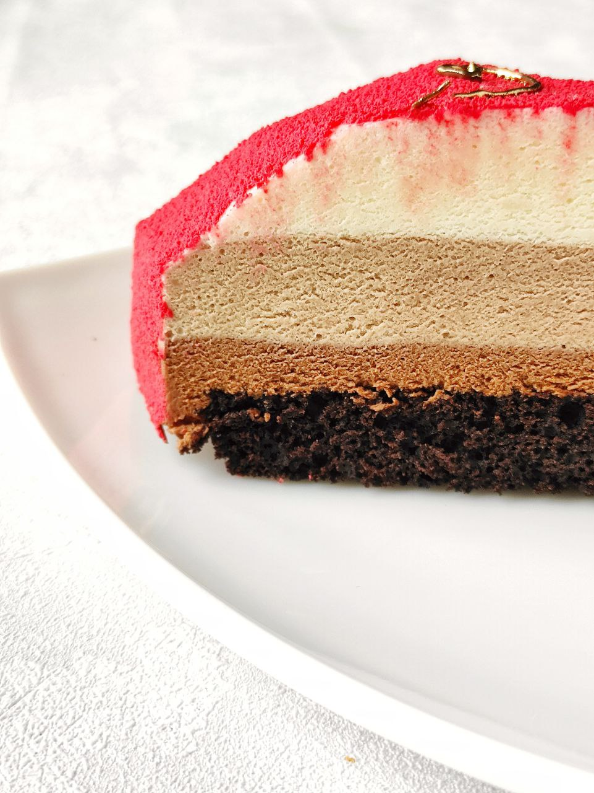
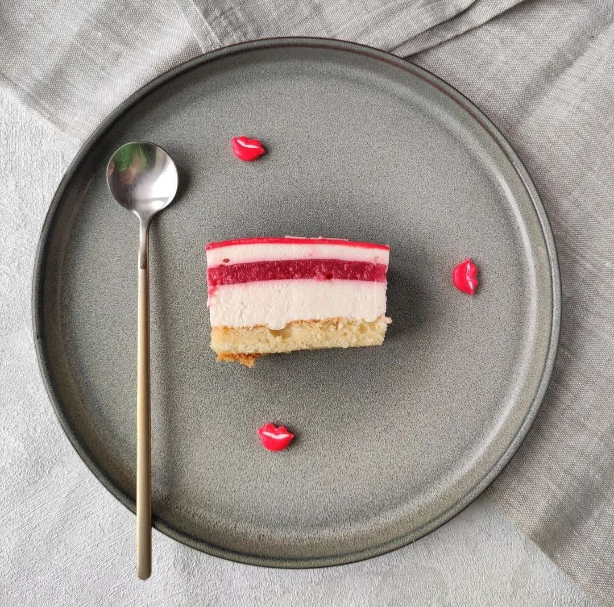
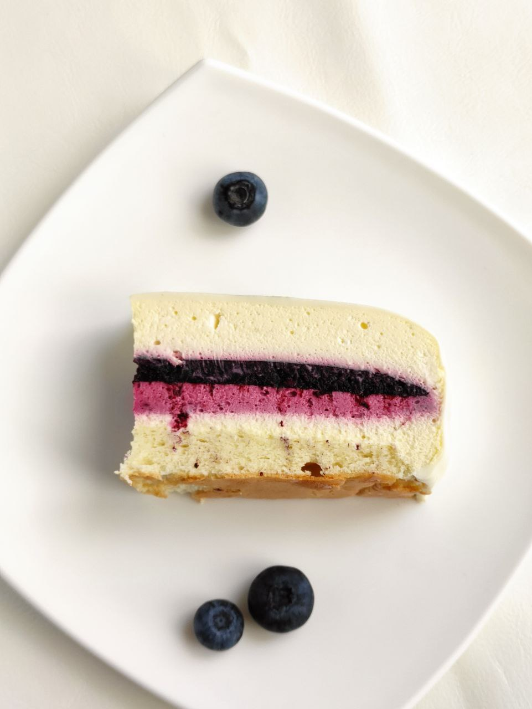

Муссовые торты
Основу муссовых тортов составляют муссы- это смесь взбитых сливок с ягодными,фруктовыми,шоколадными и/ или кремовыми составляющими.Также в муссовых тортах присутствует бисквит в небольшом количестве и различные ягодные, ореховые, шоколадные слои

Три шоколада
Три слоя мусса- на белом, молочном и темном шоколаде, которые лежат на шоколадном( или ванильном) бисквите

Клубника/ шампанское
Миндальный бисквит Джоконда, ягодный слой из клубники и малины и мусс на основе сливок, розового шампанского и сыра маскарпоне

Черника/ лайм
Миндальный бисквит Пан де Жен, конфи из черники, креме черника/ лайм,мусс ванильный